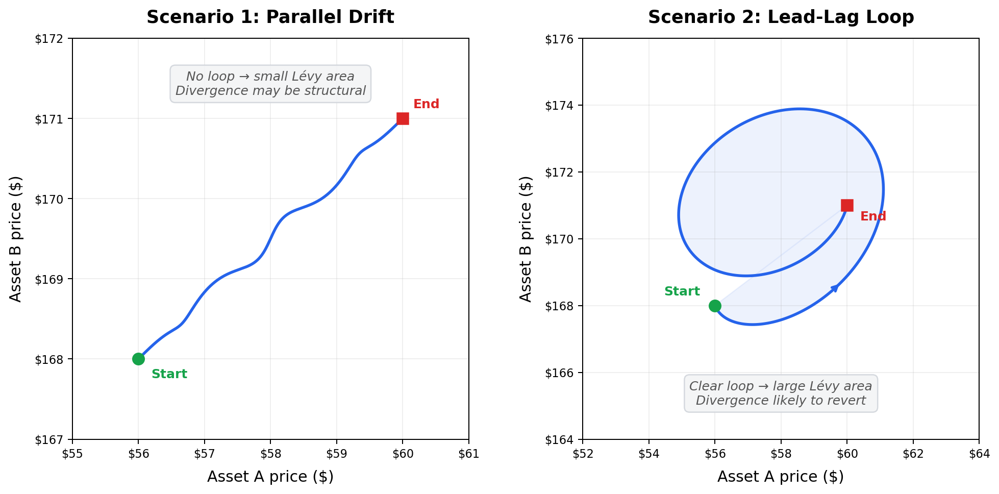

Teaching a Pairs Trade to Care About the Path
Imagine two scenarios where a pair of stocks ends up at the exact same extreme spread.
In one, Asset A drifts steadily upward while B barely moves - a slow, parallel divergence that could be permanent. In the other, A spikes first, B partially follows after a delay, and the two prices trace a little loop against each other.
A standard trading signal sees those as identical. But they aren't - and I wanted to know whether capturing that difference could make trade entries smarter.
That question turned into Path Signature Pairs Trading: a small experiment at the intersection of quantitative trading and a piece of pure math called the Lévy area.
The short version: the math did reveal real structure in the data. Turning that structure into better trades was harder - and that tension ended up being the most interesting part of the whole project.
What is pairs trading?
Pairs trading is one of those classic quantitative finance ideas that's easy to explain. You take two assets that usually move together - like Coca-Cola and Pepsi, or two major index funds like SPY and QQQ - and when they drift unusually far apart, you bet they'll come back together. You buy the one that's fallen behind and sell the one that's run ahead, profiting when the gap closes.
The standard way to measure that divergence is with a z-score. Think of a z-score as a "weirdness meter": it tells you how many standard deviations the current spread is from its recent average. A z-score of +2 means the pair is unusually far apart - about as extreme as the top 2.5% of historical readings. A z-score near 0 means everything looks normal. When the z-score gets extreme enough, the strategy enters a trade expecting things to revert.
This works fine, but it throws away a lot of information. A z-score tells you how far apart two assets are. It says nothing about how they got there.
Why the path matters
Go back to the two scenarios from the opening. In the first there is the slow, steady drift - maybe something fundamental changed. A new regulation, an earnings surprise, a sector shift. The divergence might not revert at all. In the second scenario of a spike-then-follow - there's a clear leader-follower dynamic. One asset moves, the other reacts with a delay, and that kind of divergence tends to resolve.
To see the difference geometrically, imagine plotting Asset A's price on one axis and Asset B's price on the other, then tracing the path over time. When both assets drift apart in parallel, the path is roughly a straight line - there's no enclosed area. But when one asset moves first and the other follows with a delay, the path curves back on itself and traces a loop.

The Lévy area measures exactly this: the signed area enclosed by two paths as they evolve together. It comes from a branch of mathematics called path signature theory - essentially a framework for summarizing the shape of a journey rather than just the destination. Instead of asking “where did these prices end up?”, path signatures ask “what pattern did these prices trace along the way?”
I didn't use the full signature machinery - it can get quite involved. I focused on one specific piece, the Lévy area, because it's the simplest component that captures ordering and lead–lag structure. Intuitively, it measures whether Asset A tended to move before Asset B, or vice versa - whether there was a leader and a follower, or whether they just drifted apart in parallel.
A large Lévy area (positive or negative) means the paths looped - one asset led the other - and the divergence is more likely to revert. A Lévy area near zero means no clear lead–lag, which could mean the divergence is structural and might stick.
That decision to use just this one piece ended up being one of the most important choices in the project. When you're exploring a new idea, keeping the experiment small and interpretable matters a lot more than throwing in everything the theory offers.
What I built
I kept the codebase intentionally small and research-oriented. The pipeline downloads minute-level price data from Yahoo Finance, computes rolling Lévy areas for asset pairs, and then compares two strategies on out-of-sample data (data the strategy has never seen during setup - a standard safeguard against fooling yourself with hindsight):
- Baseline: enter a trade whenever the z-score gets extreme enough.
- Signature-filtered: enter the same trade, but only when the Lévy area also confirms meaningful lead–lag structure.
That distinction matters. The Lévy area isn't telling the strategy what to trade or which direction to bet - the z-score still handles that. The area only answers one narrow question: “Should I trust this divergence enough to act on it?”
I liked that framing because it kept the experiment honest. Instead of asking the new feature to do everything, I only asked it to improve decision quality around the edges.
Before looking at any trading results, I built a shuffle test - a diagnostic that randomly scrambles the price movements and recomputes the Lévy area hundreds of times. This creates a baseline of “what would the area look like if there were no real pattern at all?” If the real area looks meaningfully different from the shuffled noise, that's evidence the structure is genuine rather than an artifact of randomness.
I also built a synthetic data mode with known lead–lag baked in - one asset is programmed to follow the other with a delay. Before claiming the feature works on messy market data, I wanted to confirm it could at least detect the behavior it was designed to detect in a controlled setting. That turned out to be one of the most valuable engineering decisions in the project.
What happened
I tested on four real pairs using 1-minute bars over a recent week: XOM/SLB (energy stocks), SPY/QQQ (broad market index funds), KO/PEP (consumer staples), and BTC/ETH (cryptocurrency).


The signature-filtered strategy improved the Sharpe ratio - a common measure of return per unit of risk, where higher means you're getting more reward for the volatility you're taking on - on 3 of the 4 pairs. The most striking result was SPY/QQQ, where the filter flipped Sharpe from slightly negative to positive. BTC/ETH also improved, with the filter trimming 6 trades while nudging both Sharpe and win rate higher. KO/PEP, which already had the strongest baseline performance, saw a small boost. On XOM/SLB, the filter improved win rate from 83.3% to 85.7% but overall Sharpe slipped from 0.381 to 0.355.
That XOM/SLB result turned out to be one of the most useful things I saw. It forced me to separate two ideas that are easy to blur together: detecting structure in data and making money from that structure.
The filter did exactly what it was designed to do - it removed the lower-confidence entries and improved trade quality. But the two trades it filtered out happened to be profitable ones. "This feature is working correctly" and "this feature is making me money" turned out to be different statements, and that gap is probably the single biggest takeaway from the whole project.
What I learned
Two lessons stood out beyond the results themselves.
What I'd explore next
If I kept pushing this, I'd focus on two things the current results actually point toward. The XOM/SLB result - where better trade quality didn't translate into better returns - makes me curious whether the area magnitude could work as a continuous position-sizing signal rather than a binary on/off filter, since the current threshold throws away information about how strong the lead–lag is. And I'd want to test volatility-aware windows - the fixed-size lookback probably isn't the right lens for every pair, especially ones as different as energy stocks and crypto.
Beyond that: longer time horizons and larger samples, transaction cost modeling, and testing higher-order signature terms to see whether richer path information helps or just adds noise.
Final thoughts
I like to work on projects like this because they sit in a sweet spot between theory and practice. On one side, there's a beautiful mathematical idea - paths have geometry, and that geometry contains information. On the other side, there's the blunt reality that markets don't care how elegant your equations are. It keeps you grounded.
This project was a reminder that sometimes the most interesting edge isn't in a new model or more data - it's in looking at the same old signal from a slightly different angle and asking: am I paying too muchattention to the destination, when I should be studying the path?